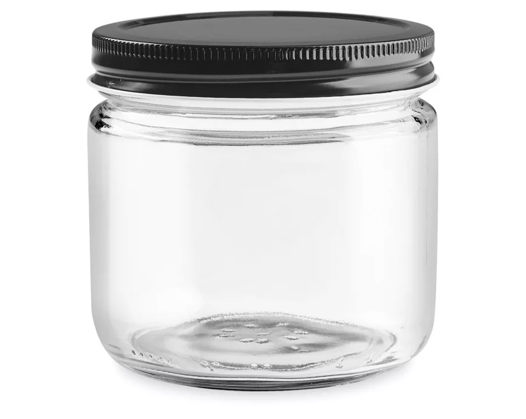
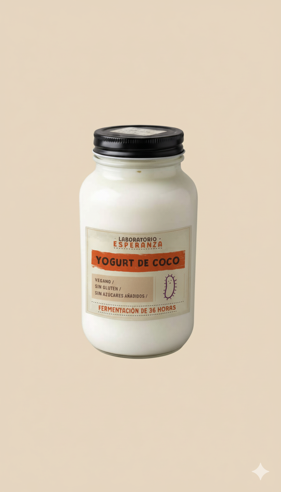
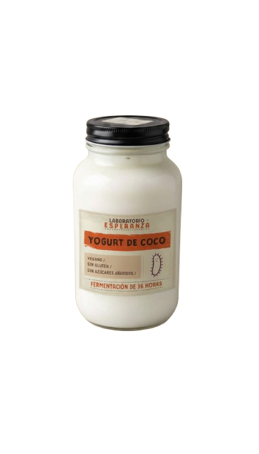

FERA: YOGUR DE COCO
Laboratorio Esperanza
Yogur de coco artesanal, fermentado por 48 horas con L. Reuteri. Probiótico vivo, sin lácteos y 100% natural.
INGREDIENTES
- COCO
- AGUA
- INULINA (PREBIÓTICO)
- CULTIVO VIVO L. REUTERI
- TAPIOCA
SELECCIONA TAMAÑO
PROBIÓTICO VIVO
SIN LÁCTEOS / VEGAN
48H FERMENTACIÓN